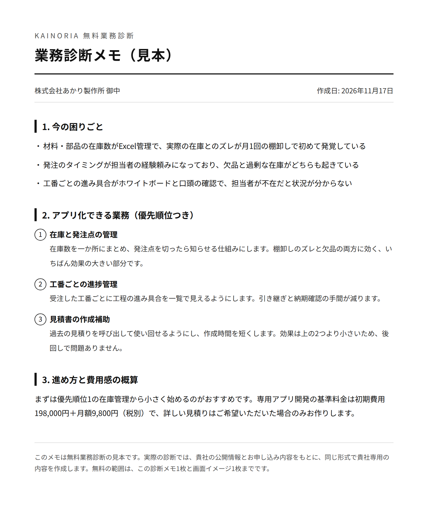

業務診断メモ
お申し込み内容と貴社の公開情報をもとに整理した、A4・1枚のメモです。「今の困りごと」「アプリ化できる業務（優先順位つき）」「進め方と費用感の概算」の3点を、貴社の業務に即して書きます。汎用のチェックリストではなく、貴社専用に作成します。
KAINORIAの無料業務診断は、貴社の公開情報とお申し込み内容をもとに、「どこをアプリ化すると一番楽になるか」を1枚の診断メモにまとめ、貴社向けの画面イメージ1枚とあわせてお送りするものです。申し込みは約3分、返送は3営業日以内。費用はかかりません。
届くもの：業務診断メモ1枚＋貴社向け画面イメージ1枚／診断後に契約を前提とする必要はありません
申し込む前に目安を知りたい方は、かんたん業務チェック（5つの質問・その場で結果・回答は送信されません）からどうぞ。
KAINORIAは大阪府を拠点とするソフトウェア事業です。在庫管理アプリ「SmartStock SME」の開発・提供と、中小企業向け専用アプリの受託開発を行っています。製品の実画面と、納品前の4段階の品質確認の考え方はトップページに掲載しています。事業者情報・特定商取引法に基づく表記も公開しています。
お申し込み内容と貴社の公開情報をもとに整理した、A4・1枚のメモです。「今の困りごと」「アプリ化できる業務（優先順位つき）」「進め方と費用感の概算」の3点を、貴社の業務に即して書きます。汎用のチェックリストではなく、貴社専用に作成します。
貴社の業務に合わせた画面イメージを1枚お付けします。診断メモで挙げた業務が、実際にどんな画面で回るようになるかを見ていただくためのものです。
無料の範囲は、この診断メモ1枚と画面イメージ1枚までです。詳しい見積りや試作品の作成は含まれません。受け取ったあと、進めるかどうかは貴社でご判断ください。こちらから契約をお願いすることはありません。
架空のデモ企業「株式会社あかり製作所」を例にした見本です。実際にお送りする診断では、貴社の公開情報とお申し込み内容をもとに、同じ形式で貴社専用の内容を作成します。


申込フォームに、会社名・業種・困っている業務・今の運用方法などをご記入ください（3分ほど）。
お申し込み内容と貴社の公開情報を確認し、診断の材料をそろえます。
業務診断メモと画面イメージを、ご記入のメールアドレスへお送りします。
内容を見て「もう少し詳しく聞きたい」と思われた場合だけ、ご返信ください。見積りや進め方をご案内します。
在庫数がExcelや紙頼みで、発注のタイミングが勘になっている。
注文と納期の把握が担当者の頭の中にあり、引き継ぎが難しい。
毎回同じような書類を手作業で作っていて、時間がかかっている。
作業の進み具合や予定が、ホワイトボードや口頭でしか分からない。
業種は問いません（製造・ECや小売・飲食など）。「うちの業務が対象になるか分からない」という場合も、まずはお申し込みください。対象外の場合は、その旨をお返事します。
申込フォーム（Googleフォーム）で受け付けています。フォームでお聞きするのは、会社名・ご連絡先メールアドレス・業種・困っている業務・今の運用方法の5項目ほどです（約3分）。ご記入いただいた情報は診断の目的のみに使用し、第三者へ提供しません。詳しくはプライバシーポリシーをご覧ください。
フォームが開けない場合は、メール（kainoria.official@gmail.com）でも受け付けています。件名を「無料業務診断の申込」として、会社名と困っている業務をお送りください。
はい。業務診断メモと画面イメージの作成・送付まで無料です。診断のあとに契約を前提とする必要もありません。
お申し込みから3営業日以内に、ご記入のメールアドレスへお送りします。お申し込みが重なった場合は、事前にご連絡のうえ、少しお時間をいただくことがあります。
診断の送付後に、確認のご連絡を1回だけ差し上げることがあります。それ以上のご連絡は、ご返信をいただいた場合のみ行います。
診断の作成とご連絡の目的のみに使用し、第三者へ提供しません。取り扱いの詳細はプライバシーポリシーに定めています。
専用アプリ開発の基準料金は、初期費用198,000円＋月額9,800円（いずれも税別）です。料金は機能に合わせて相談可能です。なお、導入事例のご紹介にご協力いただける先行モニター企業には、初期費用を98,000円（税別）でご提供しています。詳しい見積りは、診断のあとにご希望いただいた場合のみお作りします。